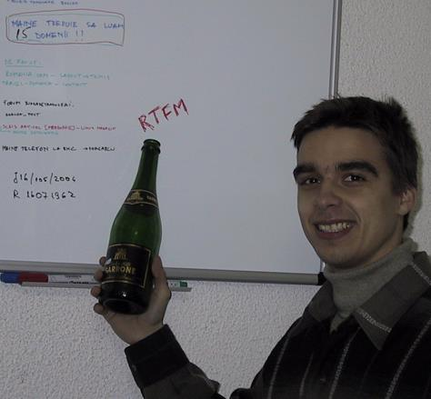
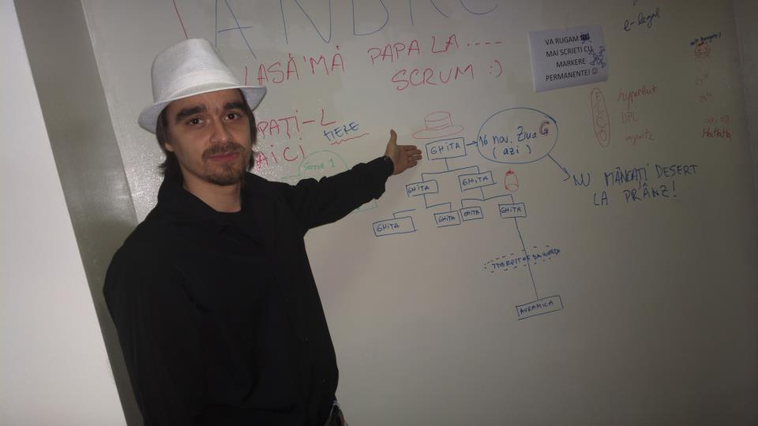
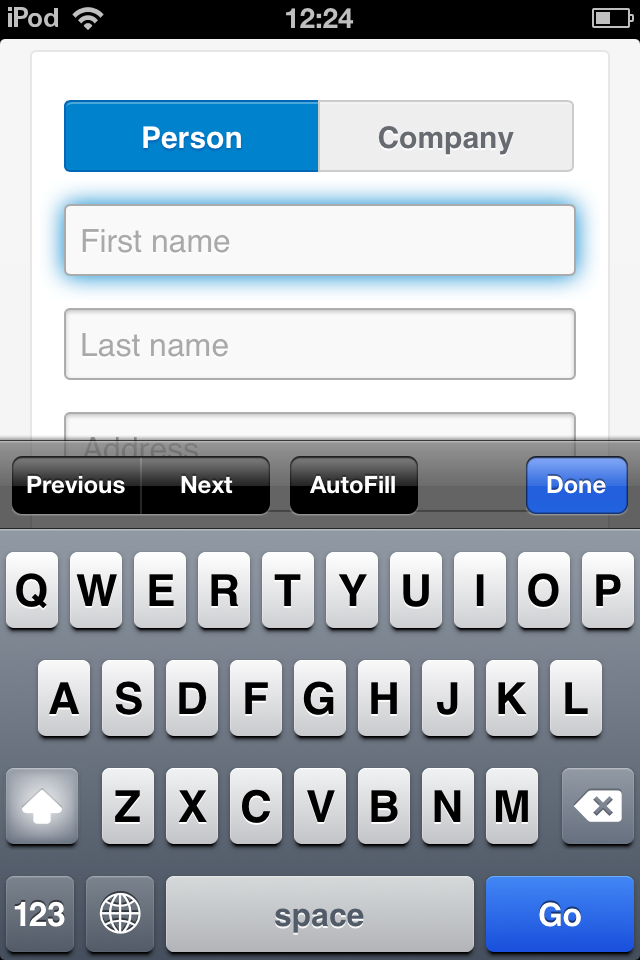
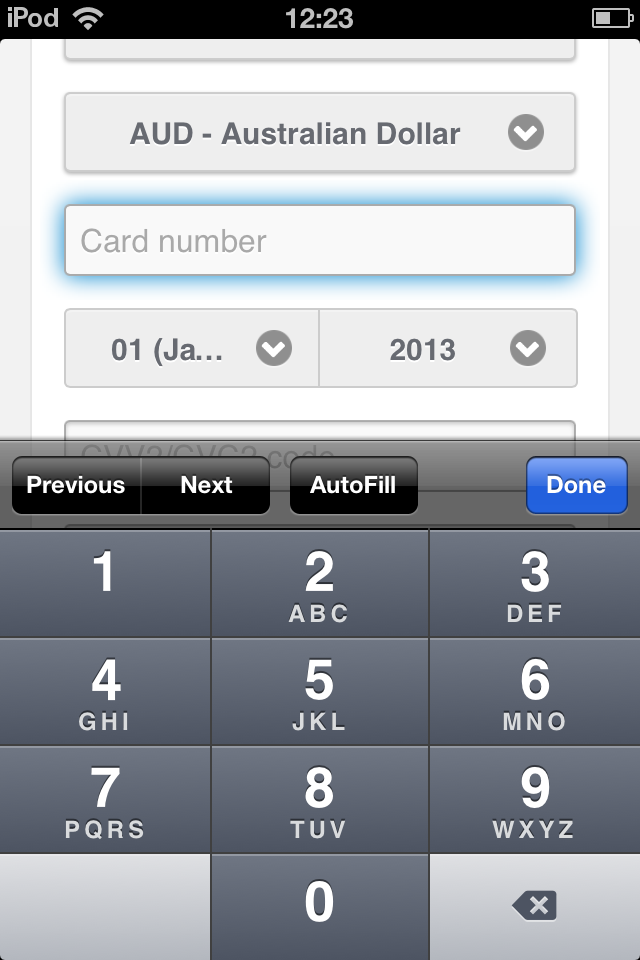
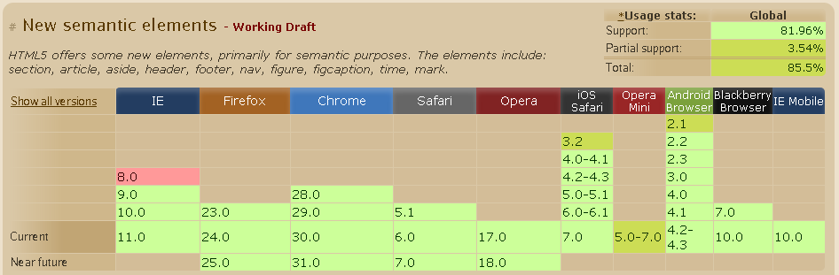
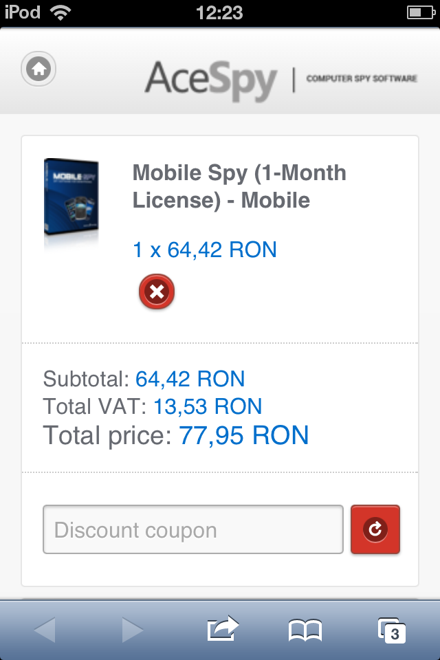

De la site-uri mai performante la jocuri web multiplayer
Serban Ghita
Senior Software Engineer
- 5 ani in Avangate
- 11 ani in IT & eCommerce
- 2002 - primul job in IT
- contribui la proiecte open-source
Despre mine
Despre mine
Despre mine
 |
Despre mine
Despre mine
Despre mine

Serban Ghita
Senior Software Engineer
In Avangate lucrez in prezent la:
- Control Panel
- Shopping Cart
- Shopping Cart API
Avangate Cpanel

Avangate Cpanel

Avangate Shopping Cart

Serban Ghita
Senior Software Engineer
Proiecte open-source: https://github.com/serbanghita
Sa ne cunoastem
- Cati dintre voi au folosit pana acum HTML5 in productie?
- Cati dintre voi au dezvoltat aplicatii web de tip single-page?
- Cati dintre voi au dezvoltat jocuri web (Flash, HTML5)?
Sumar prezentare
- Termeni noi utilizati in prezentare
- Ce este HTML5
- Care sunt noile facilitati (markup & APIs)
- Parti bune, care sunt provocarile
- Impactul asupra dispozitivelor clasice si mobile
- Pauza
- Studii de caz si exemple
Termeni noi
- Progressive enhancement
- Mobile first
- Polyfills
- Milestones / Legacy
- Browser compatibility
Termeni noi
Progressive enhancement
Stategie de web design prin care toti vizitatorii site-ului pot experimenta cel putin o versiune de baza functionala. Cei ce au browsere sau conexiuni mult mai capabile vor beneficia de o experienta de navigare imbunatatita.
Alternativa la stategia "Graceful degradation".
Ex: CSS3 border-radius, box-shadow, gradients, etc.
Termeni noi
Mobile first
Strategie de web design prin care un site, destinat dispozitivelor clasice si mobile, este conceput.
De citit: Desktop-first to Mobile-first with Bootstrap - Mark Otto
Termeni noi
Polyfills
Un cod (de regula JavaScript) ce suplineste o functionalitate ce nu este disponibila in browser-ul vizitatorului.
A nu se confunda cu widgets, care de fapt adauga functionalitati noi.
Exemple polyfills: Modernizr Wiki
Exemplu widget: <input type="range"> - implementare jQuery Mobile
Termeni noi
Milestones / Legacy
Un software ce a fost facut acum cativa ani si care este utilizat de clienti in mod activ nu poate fi rescris peste noapte si nici nu poate fi intrerupt pentru un upgrade major.
Un milestone reprezinta un capitol nou in viata unui software ce poate functiona in mod diferit fata de cele anterioare, care devin automat legacy.
Exemplu: Avangate Template Editor
Termeni noi
Browser compatibility
Abilitatea unui browser de a recunoaste o functionalitate noua.
Ce este HTML5?
Ce este HTML5?
 |
Va multumesc
O seara minunata in continuare!
Ce este HTML5
- upgrade de la HTML 4.01 si XHTML 1.1
- tag-uri si atribute noi
- API-uri noi (in majoritate JavaScript)
- o abordare diferita in constructia paginilor web
- renuntare totala la librarii 3rd party
(Flash, Silverlight, Java applets, etc)
Noutati importante in HTML5
Elemente si atribute HTML |
APIuri |
De retinut: Elementele si atributele noi simuleaza
comportamentul unor widget-uri JavaScript populare.
Credits: Sergey Mavrody
Tag-uri si atribute
Reguli de parsare a paginilor mult mai relaxate.
Atat <img src="test.jpg" /> cat si <img src="test.jpg"> sunt acceptate.
Tag-uri si atribute
Elemente noi
<article> <aside> <header> <nav> <footer> <section> <main> <summary> <details> <figure> <figcaption> <time> <datalist>
<canvas> <audio> <track> <video> <embed> <source>
<menu> <menuitem> <keygen> <mark> <meter> <progress>
<rp> <rt> <ruby> <wbr> <bdi> <command> <output> <data>
Tag-uri si atribute
Noi tipuri de campuri pentru formulare
email, number, search, url, range, date, time, tel, color
De retinut: Influenteaza comportamentul browserelor de pe dispozitivele mobile.
Tag-uri si atribute
<input type="text">
Tag-uri si atribute
<input type="email">

Tag-uri si atribute
<input type="number">
Tag-uri si atribute
<input type="url">
Tag-uri si atribute
<input type="date">
Tag-uri si atribute
<input type="time">
Tag-uri si atribute
Atribute noi pentru campuri
placeholder, pattern, required, autofocus, list, min, max, step
Tag-uri si atribute
Atribute noi pentru elemente
- Atributul type="" este optional pentru <script> si <style>
- <meta charset="...">
- <script async src="...">
- Atributele data-* pot sa contina orice fel de date.
Ex: <span data-userid="1234">Nume</span> elem.dataset.userid - elem.contenteditable si document.designMode
Tag-uri si atribute
Diferente de markup
Urmeaza exemple de cod HTML5.
Tag-uri si atribute
Combatibilitate tag-uri noi HTML5
| ~9 |
Tag-uri si atribute
Microdata
- Ce este microdata?
- Cum se aplica pe Internet
- Exemplu live
Tag-uri si atribute
Microdata
Este un set de atribute HTML ce se aplica peste elementele HTML existente in pagina pentru a da textului un inteles semantic specific. (ex. eveniment, review, produs, etc)
Este folosit de motoarele de cautare in afisarea rezultatelor dar si de parserele diverselor servicii social media.
Exista 3 scheme microdata, insa cel mai popular este schema.org.
Tag-uri si atribute
Microdata
Cum este aplicat la Google
- Article
- Book Reviews
- Events
- Local Businesses
- Movies
- Products
- Restaurants
- Software Applications
- TV Episodes
APIuri
Sumar
|
|
Notable APIs
- Canvas 2D - var ctx = canvasElem.getContext('2d');
- Web Storage - window.localStorage
- Offline Web Applications - window.applicationCache
- Geolocation - navigator.geolocation
- Device orientation event - deviceorientation
- Touch events - touch(start|end|move|cancel)
- User media - video, audio, x-webkit-speech
Notable APIs
Web Storage, Touch Events, Offline Web Applications
Case studies
- Avangate Mobile Shopping Cart
- Avangate Visitor Web App
- Chess Web App
- Cut the Rope
- My multiplayer game
Case studies
Avangate Mobile Shopping Cart
Case studies
Avangate Mobile Shopping Cart
Case studies
Avangate Mobile Shopping Cart
Case studies
Avangate Mobile Shopping Cart